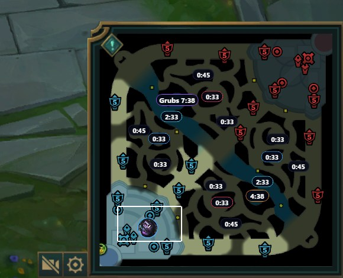
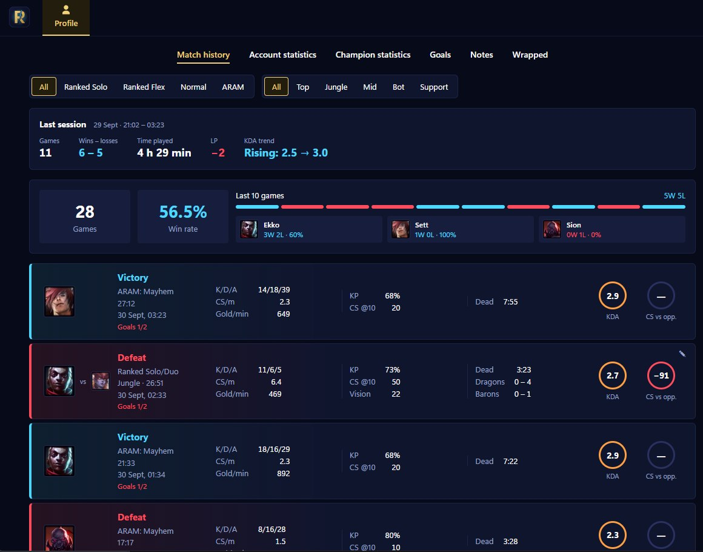
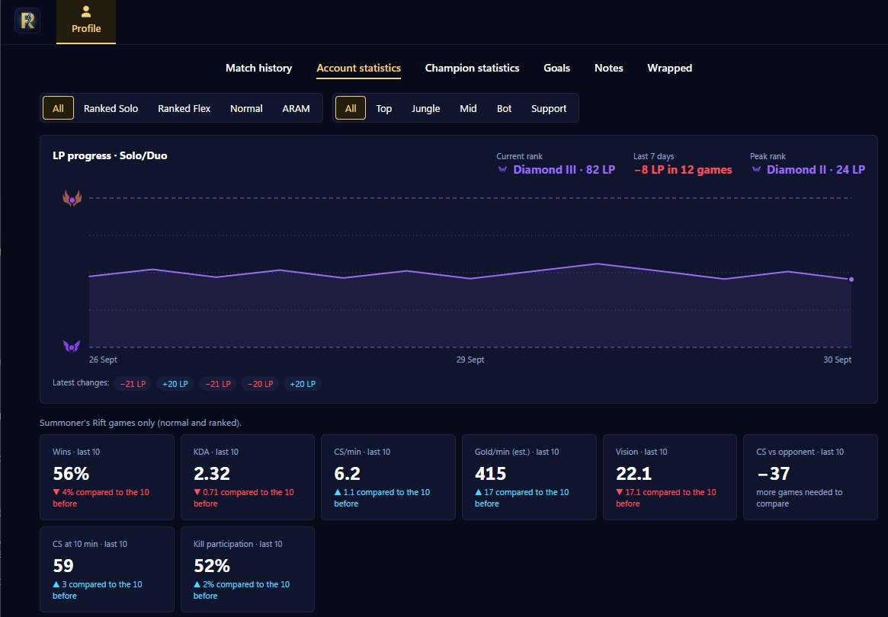
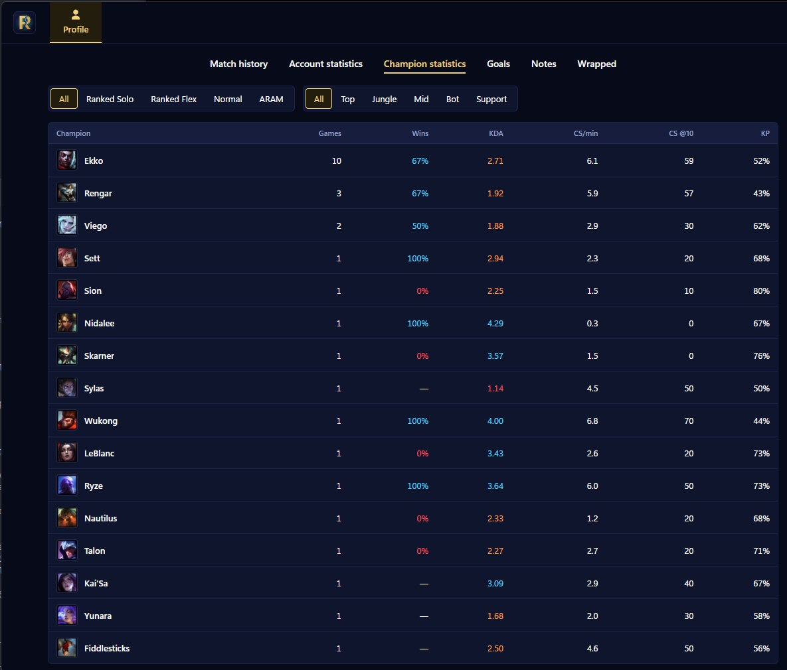
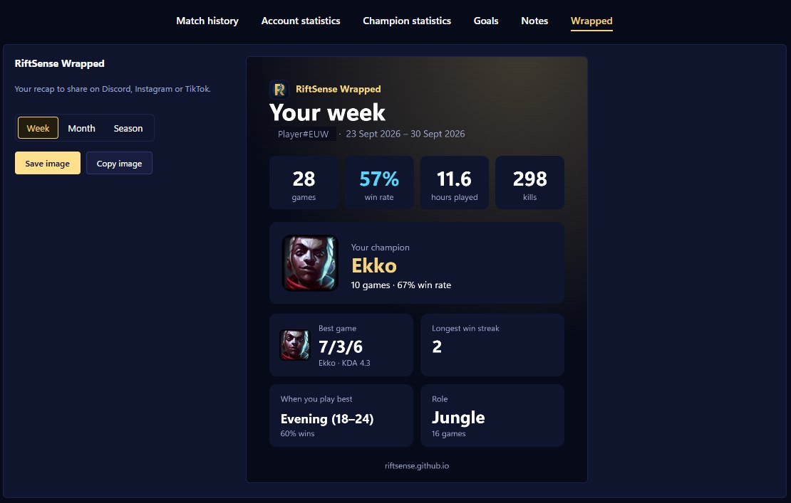

RiftSense
Keeps track of what League of Legends doesn't show you, so you can focus on playing.
Tiene traccia di quello che League of Legends non ti mostra, così pensi solo a giocare.

Timers on your minimapTimer sulla minimappa
Every jungle camp, Dragon, Baron, Void Grubs, Rift Herald, inhibitors and Nexus turrets, with a live countdown right on their spot. In game you also get a small widget with your goals, your matchup notes and the enemy summoner spells you mark when they're used.
Tutti i campi della giungla, Drago, Barone, Larve del Vuoto, Araldo, inibitori e torri del Nexus, con il conto alla rovescia proprio al loro posto. In partita hai anche un piccolo widget con i tuoi obiettivi, le tue note sui matchup e gli incantesimi nemici che segni quando li usano.

Match historyStorico partite
Every game as a match card: result, queue, KDA, CS, kill participation, objectives and your per-game goals. On top, your last session and your last 10 games at a glance.
Ogni partita con esito, coda, KDA, CS, partecipazione alle uccisioni, obiettivi e i tuoi obiettivi personali. In alto, l'ultima sessione e le ultime 10 partite a colpo d'occhio.

Account statisticsStatistiche account
Your Solo/Duo LP over time, your peak rank and your last 10 games compared to the 10 before: are you playing better or worse?
I tuoi LP in Solo/Duo nel tempo, il rank massimo e le ultime 10 partite a confronto con le 10 precedenti: stai giocando meglio o peggio?

Champion statisticsStatistiche campioni
Win rate, KDA, CS and kill participation for every champion you play, filtered by queue and role.
Vittorie, KDA, CS e partecipazione alle uccisioni per ogni campione che giochi, filtrabili per coda e ruolo.

RiftSense WrappedRiftSense Wrapped
Your week, month or season in one image to share on Discord, Instagram or TikTok.
La tua settimana, il tuo mese o la tua stagione in un'immagine da condividere su Discord, Instagram o TikTok.
Your whole match history, not just the games you played with the app
Tutto il tuo storico, non solo le partite giocate con l'app
RiftSense reads your recent games from Riot's official API, so your history, win rate and per-champion and per-role stats also include the games you played without RiftSense open. It only looks up the account signed in to your League client, and the Riot API key stays on our server, never in the app.
RiftSense legge le tue partite recenti dall'API ufficiale di Riot: storico, percentuale di vittorie e statistiche per campione e per ruolo comprendono anche le partite giocate senza RiftSense aperta. Cerca solo l'account connesso al tuo client di League, e la chiave dell'API Riot resta sul nostro server, mai nell'app.
Available as soon as Riot approves our production API key.
Disponibile appena Riot approva la nostra chiave API di produzione.